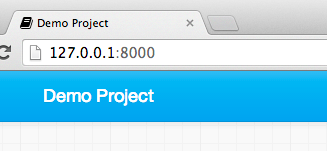
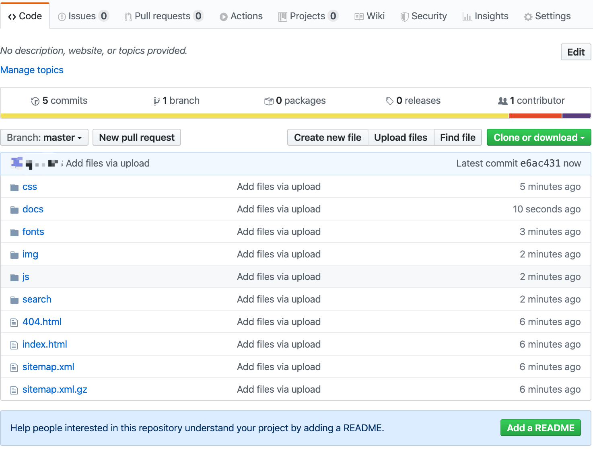
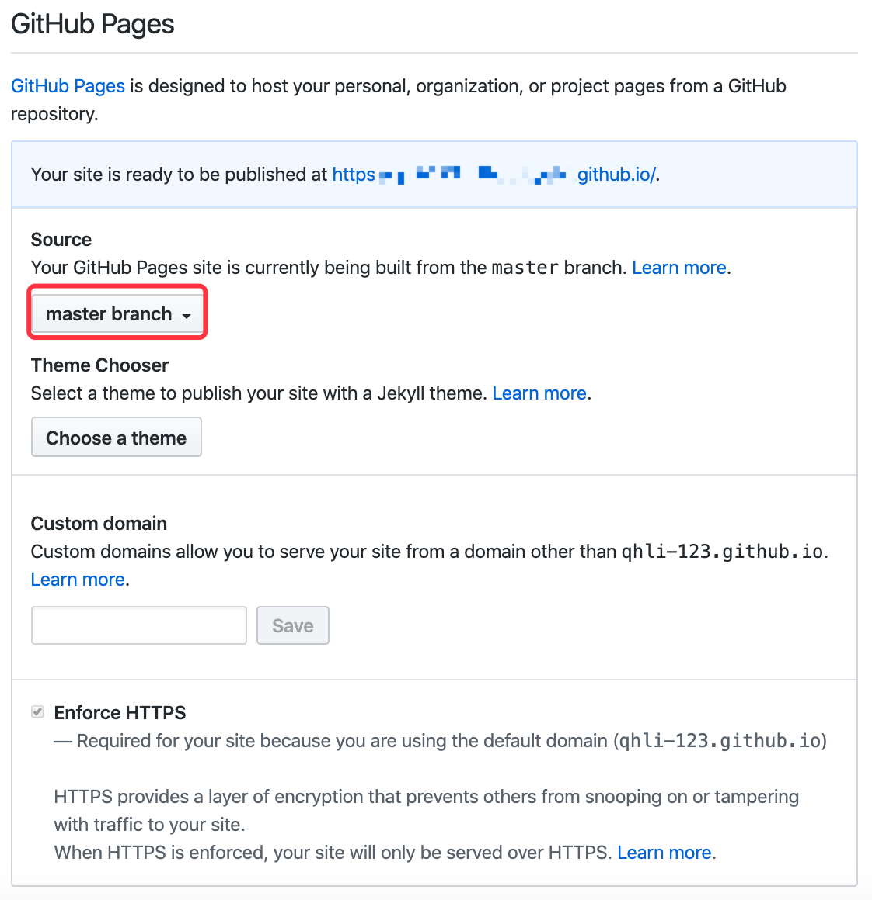

mkdocs个人博客搭建
1.概述
MkDocs 是一个用于创建项目文档的 快速, 简单 , 完美华丽 的静态站点生成器. 文档源码使用 Markdown 来撰写, 用一个 YAML 文件作为配置文档。
2.安装
安装比较简单，通过Python和pip（package installer for Python）来安装MkDocs。本次是在windows系统上搭建的博客，所以只讲windows系统上搭建的方法：
- 首先是上Python官网下载Python安装包，然后安装，Python安装过程中有安装pip的选项，默认是勾上的，所以不需要再自己安装pip，还有一个将路径添加到path的选项，也选上，后面的正常安装就行，这样Python和pip就安装完成了，比较简单。
- win+r然后输入cmd打开命令行窗口，可以通过以下命令查看是否安装了上述依赖：
$python --version
Python 3.8.5
$pip --version
pip 20.2.1 from d:\python\python38\lib\site-packages\pip (python 3.8)
- 使用pip安装mkdocs（安装过程中若提示pip版本不够新，命令行中会有建议的更新的命令，复制粘贴进行更新就行）：
$pip install mkdocs
- 查看是否安装成功：
$pip --version
mkdocs, version 1.1.2 from d:\python\python38\lib\site-packages\mkdocs (Python 3.8)
这样mkdocs就已经安装到你的系统。
3.开始
输入以下命令以开始一个新项目：
$ mkdocs new my-project
$ cd my-project
我们看一下已经创建的初始化项目：
有一个配置文件 mkdocs.yml, 和一个包含文档源码的 docs 文件夹。在 docs 文件夹里包含了一个名为 index.md 的文档。

MkDocs 包含了一个内建的服务器以预览当前文档。控制台切换当前目录到 mkdocs.yml 配置文件相同文件夹, 输入 mkdocs serve 命令以启动内建服务器：
$ mkdocs serve
Running at: http://127.0.0.1:8000/
在浏览器上输入http://127.0.0.1:8000/,你将看到以下页面：

内建服务器支持在配置文件、文档目录或主题发生改变时自动载入并重新生成文档，也就是说，内建服务器启动后，会一直跟踪项目文档的变化，当你修改了文档后，在网页上可以实时看得到，图示可见内建服务器一直在跟踪文档变化并不断输出信息：
现在可以开始编辑配置文件 mkdocs.yml 了，把 site_name 改成其他内容并保存文档：

刷新浏览器你将看到网页标题已发生改变：

4.添加页面
编辑 doc/index.md 文档, 将默认标题改为 MkLorum, 刷新浏览器即可看到标题变化。
要为文档添加导航条, 只需在配置文件中添加导航条需要的标题和排序即可：
site_name: MkLorum
pages:
- [index.md, Home]
- [about.md, About]
刷新浏览器即可看到 Home 和 About 导航栏目。
5. 配置主题
可以在配置文件中修改文档主题. 在 mkdocs.yml 中添加如下内容：
site_name: MkLorum
pages:
- [index.md, Home]
- [about.md, About]
theme: readthedocs
刷新浏览器即可看到 ReadTheDocs 主题已被应用。

mkdocs安装后仅内置两种主题，mkdocs和readthedocs，如果需要使用其它主题，需要先通过pip进行安装。
6.站点生成
我们现在已经可以发布 MkLorum 文档了，通过以下命令生成文档：
$ mkdocs build
该命令创建了一个 site 新目录，site里的所有文件，就是建站所需的文件，将site里的所有文件放置到你要部署个人博客的服务器，就可以被外界所访问。
7.部署到Github Page
Step 1 创建新仓库
登录 GitHub，在右上角选择 New repository，创建新仓库。
Step 2 配置仓库信息
在仓库设置页面，Repository_name设置成 xxxx.github.io，其中 xxxx 是你 GitHub 的用户名(注意，必须和用户名一致)。 选择 Public ，点击 Create repository。

Step 3 上传网页资源到仓库
将生成的site文件夹里的所有文件上传到刚刚创建的仓库中（使用 Git 相关命令或直接使用 GitHub Desktop 软件进行操作，这里不再叙述）。

Step 4 部署到 GitHub Pages
打开仓库，点击仓库功能栏的 Setting，进入到仓库设置页面。 在设置页面找到 GitHub Pages 部分，在 Source 这里选择 master branch。

部署成功后，便可以通过 xxxx.github.io 来访问你的网页（不过现在需要翻墙才能访问）。